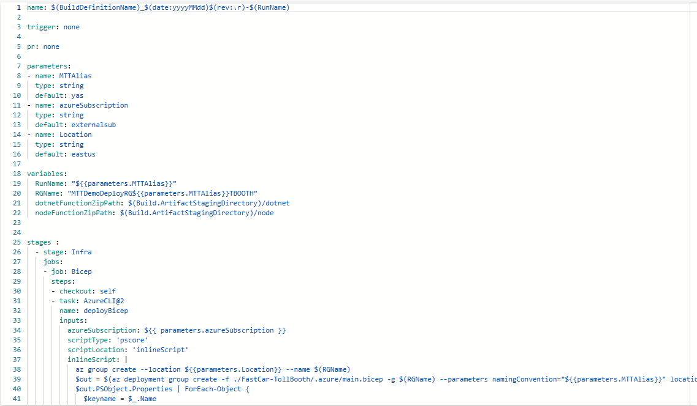
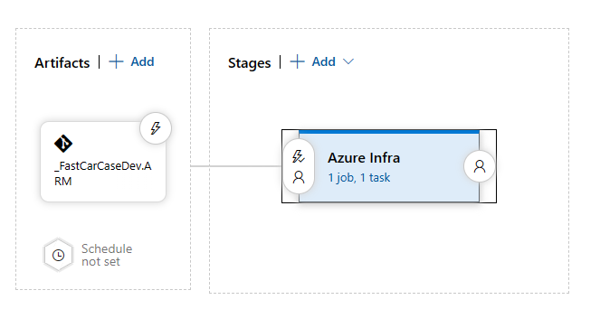
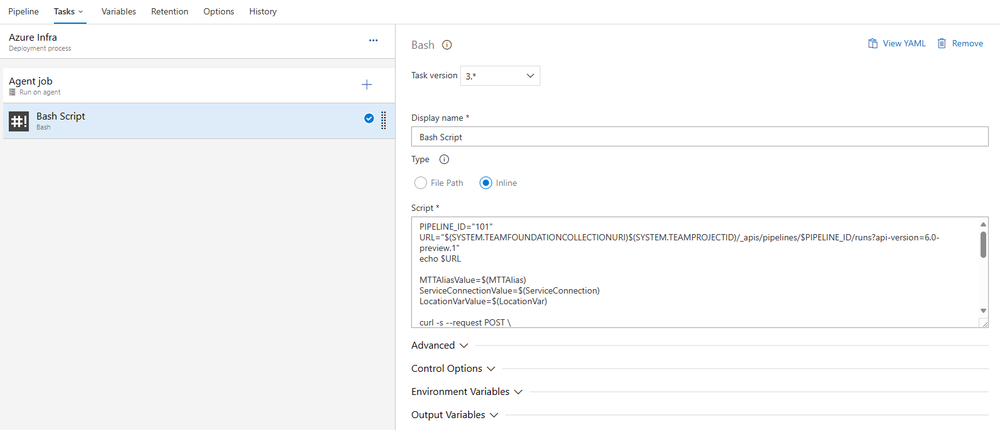
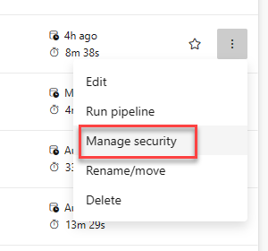
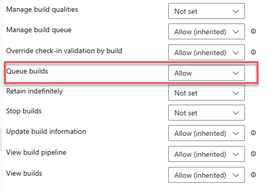
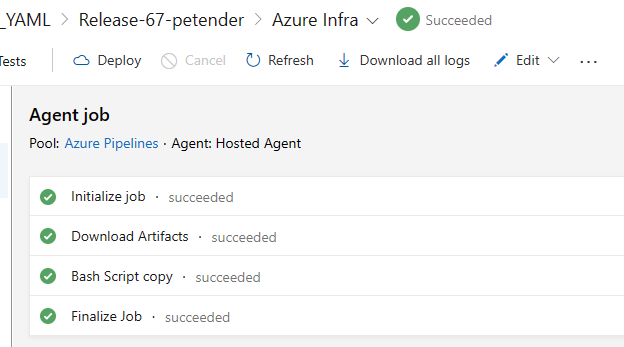
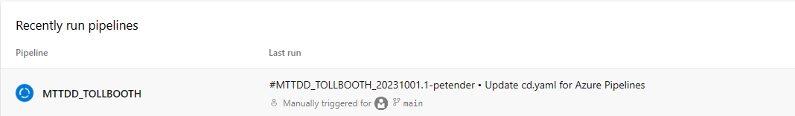

Hi y’all!
Over the last 18 months, I’ve been developing a tool for our internal Microsoft Trainer team, allowing them to deploy trainer demo scenarios in Azure using a Blazor Front-End web app, connecting to Azure DevOps pipelines using REST API calls.
At the start of the project, Classic Release pipelines were still common, since YAML was too new, and rather unknown. However, over the last few months, more and more I was thinking of shifting from Classic to YAML Pipelines. But - although the app isn’t that big or complex - it means connecting to different API endpoints for YAML, reading out the status of ongoing pipelines would be different, and getting a listing of all deployed pipelines for a given trainer, would also be different.
So you hear me coming… I don’t want to rewrite the whole app, as it also means rewriting all Classic Pipelines to YAML syntax. While I know the export to YAML is available, I didn’t want to minimize the effort, nor like the time-pressure. As in the end, what is the added value to the end-user? (If that is not spoken like a true developer, I have no idea…)
Being more and more familiar with triggering DevOps Pipelines from REST API calls, I thought about the following… what if I could create a Classic Release Pipeline, which triggers a YAML Pipeline?
After searching around a little bit on how curl would help here, it seemed possible, since there is a Classic Pipeline Task for #BASH.
The YAML Pipeline components?
In order to trigger the YAML Pipeline from the Classic Release, you need to capture the YAML Pipeline Id, as well as capturing any parameter values you need to provide.
- The YAML Pipeline Id; this is also known as the definitionId, and can be found by going to the YAML Pipeline under the ADO Pipelines section, and checking the URL in the address bar - it will be something like https://dev.azure.com/
/ /_build?definitionId=101 - Take note of the definitionId number, as you need it in the Bash script later.
- In my example, the YAML Pipeline has a section with parameters, where I’m using the trainer alias, the Service Connection/Azure Subscription info and the selected Azure Region for the deployment, like this:
|
|
Everything else in the YAML Pipeline is rather standard, triggering an Azure Bicep template deployment, using an Azure CLI Task and pointing to the Bicep file (/.azure/main.bicep), like this:
|
|

Composing The Classic Release Pipeline
- Create a new Classic Release Pipeline, with a single Stage “Azure Infra”, and add the #Bash Script as Task

- Select Inline as Type, and in the Script box, copy the following script, which does the following:
- PIPELINE_ID = the number of the YAML PipelineId
|
|
- URL = the URL of the actual DevOps YAML Pipeline REST API to use
|
|
- Next, I specify 3 variables, for which the values (the $() notation) refer to Classic Release Pipeline Variables (These are passed on from the Blazor Web App to the Classic Pipeline).
|
|
- Next, I specify the actual curl command to use, where I use the System.AccessToken Variable to allow OAuth authentication by the system account, followed by specifying we’re sending a JSON header, and the actual JSON snippet which holds the data to pass along to the YAML pipeline - finding the correct syntax to capture the variable values from earlier, was the biggest challenge here, taking a few failed attempts when triggering the pipeline :)…
|
|
The full #Bash script looks as follows:
|
|

Specify the Correct Permissions on the YAML Pipeline
Remember we used the System.AccessToken variable, which refers to the Build-In DevOps System Process. In order to make this Classic Release Pipeline trigger work, the Build-In account must have Queue Build permissions on the YAML Pipeline.
- Navigate to the YAML Pipeline
- Click the elipsis (the 3 dots) at the end of the Pipeline line, and from the context menu, select Manage Security

- Select the
Build Service Group, and set Allow for the Queue Builds permission

Running the Pipeline
- Trigger the Classic Release Pipeline, wait for it to complete

- With the Classic Release completed, navigate to the YAML Pipeline, and see this one is getting triggered / already running

Summary
In this post, I walked you through a use case within Azure DevOps, where it might be useful to build an integration between both Pipeline worlds, Classic Releases and YAML Pipeline Releases. By using a #Bash script with Curl to call the YAML Pipeline REST API endpoint, as well as passing some parameters in a JSON structure, it is possible to trigger YAML Pipelines from a Classic Release Pipeline.
I am using this scenario to give myself some time to continue updating the development work on the Blazor Front-end, pointing to YAML Pipelines only at some point, but for now, it gives me the flexibility to keep the same Classic URL Endpoints for my REST APIs, why gradually setting up new YAML Pipelines, migrating Classic to YAML etc…

Cheers!!
/Peter